At the table level, Data Exchange services allow you to export and import data in the CSV, Excel and XML formats.
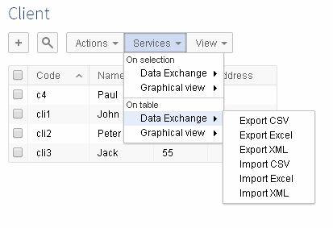
At the data set level-in addition to being able to import and export in Excel and XML-Data Exchange services allow you to transfer data. The transfer copies data directly between EBX5 tables.
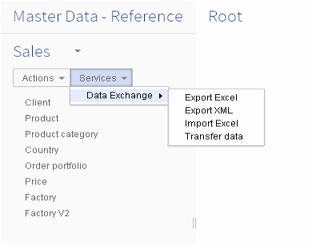
The following sections describe options when you use the 'Data Exchange' 'Export XML' and 'Import XML' services.
If the table is not defined in the data mapping configuration when you attempt to export to XML, 'Default XML format' displays as the only available target application. This default format, provided by the add-on, allows you to easily get an XML file and doesn't require a specific data mapping configuration.
If a field name has to be renamed when exporting to an XML file, or another instance arises where data in the source and target differ, you have to specify a data mapping configuration. In these types of cases, other target applications display as options (see the rest of this user guide).
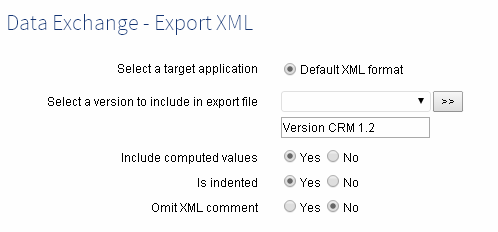
Option | Description |
|---|---|
Select a version to include into the exported file | The version is for information only. It is inserted in the exported file as the 'appversion' XML tag. |
Include computed value | Specifies whether or not computed values must be included in the export. |
Is indented | Specifies whether or not the file should be indented to improve readability. |
Omit XML comment | Specifies whether or not the generated XML comment that describes the data location and export date should be omitted from the file. |
The exported XML file contains a standard header with the following data:
The name of the application. By default, this is the name of the data set in which the table is located (a timestamps value is also added to build the name).
The version that has been selected during the export configuration. If no specific version was specified, this will be blank.
The export date.
The type of the XML export, either 'Default XML' or 'XML' when a user-defined data mapping configuration is used.
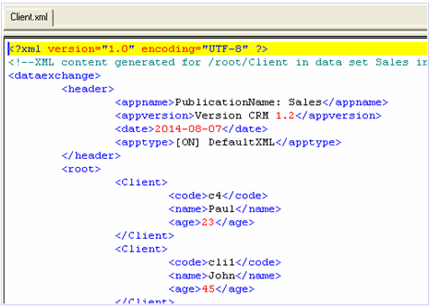
Two import modes are available: 'Update or insert' or 'Replace all content'.
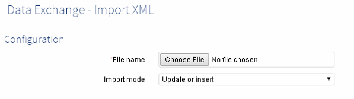
The add-on automatically identifies which data mapping to apply in order to import the data into the table. When the 'Default XML' is declared in the header of the imported XML file, then the default data mapping is applied. A UI result message provides an overview of the import process, as illustrated below.
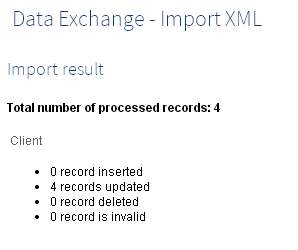
When the XML export execution process is based on the default XML configuration, the add-on generates the related data mapping configuration. It contains the correct XML paths used for each of the exported table's fields. Even though this default XML configuration cannot be modified, understanding its architecture can be of benefit to you. Indeed, if you need to configure a user-defined data mapping, the same architecture applies (see the rest of the user guide).
The following images give an overview of how this configuration is saved in the Data Exchange repository. You can access to this repository from the 'Administration' tab's 'Data Exchange' data space.
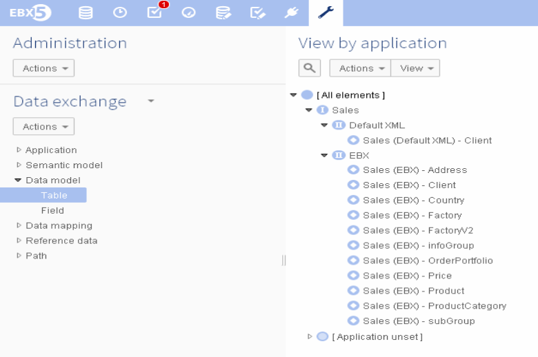
The 'Sales' (name of the data space where the table is located) application is created with the two application types, 'Default XML' and 'EBX5'. For the 'Default XML' type, only the exported table is declared ('Client'). For the 'EBX5' type, all tables and field groups located in the data space are declared.
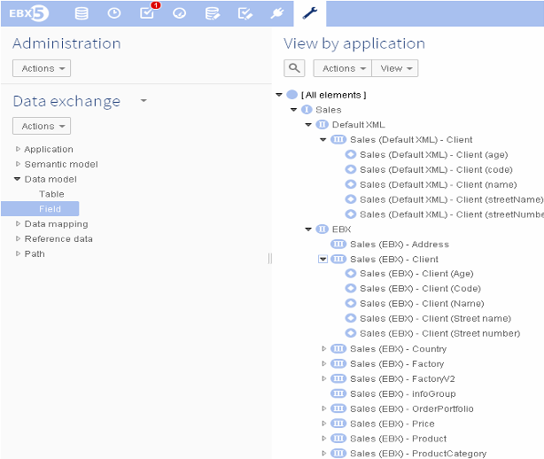
The declaration of the XML nodes for the 'Client' table is done with the default XML naming convention (direct reuse of the naming from the table in EBX5).
The declaration of the fields for every table in EBX5 is also performed.
The 'Table mapping' is automatically provided. The source table has been declared as EBX5 for the export process. And the source table has been declared as 'Default XML' for the import process.
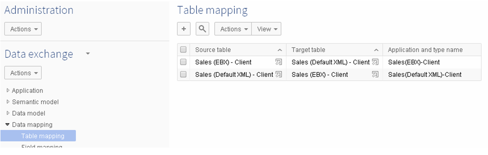
Then the add-on automatically creates the declaration for the 'Field mapping', thus providing the link between the source and the target file.
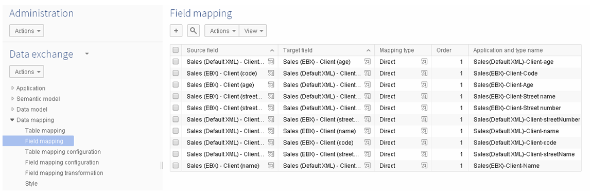
The following section describes a user-defined data mapping.
To export an XML file with a data structure that is not compliant with the 'Default XML' type, you can manually configure a user-defined data mapping.
To facilitate the configuration, the add-on can automatically analyze your XML file to generate the XML configuration as illustrated below. In most cases the XML file you want to get already exists, and you can reuse it as a template to automatically feed the configuration.
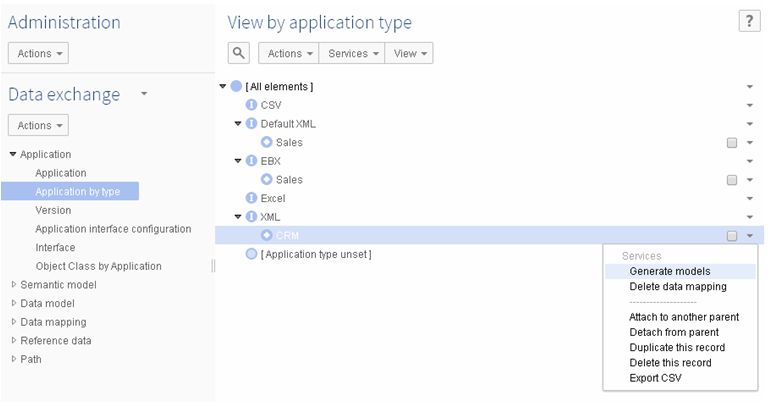
First, a new XML type application has been created manually. In the following image, this is the 'CRM' application. Since the type is XML (not 'Default XML'), the Data Exchange 'Generate models' service is available and allows you to get the XML configuration automatically.
The add-on allows you to enter the XML file that will be used to create the XML configuration.
Then you select a node path in the XML file from which the XML configuration must be applied.
The result of the configuration is displayed below. The CRM XML type application is now declared with the fields corresponding to the XML tags existing in the file.
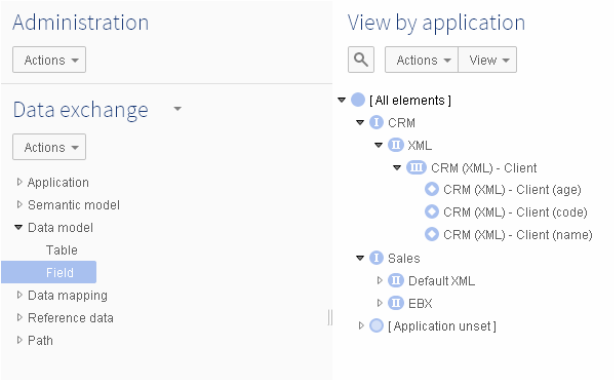
The configuration of a field with its XML path can be adapted manually as illustrated below. You can change the name, the path, etc. Conversely, in the case of a configuration based on the 'Default XML', the names and paths cannot be modified and are under add-on control.
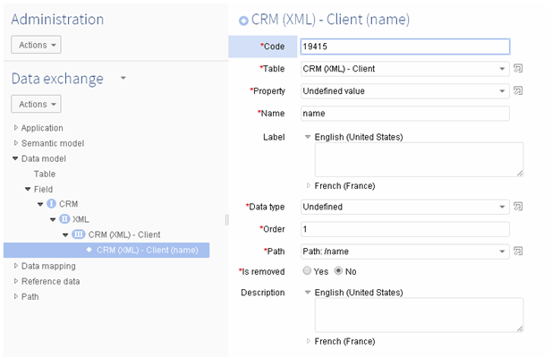
To make the export process available from the EBX5 type application ('Sales' data space) to the CRM application, the 'Interface' between both must be declared as follows:
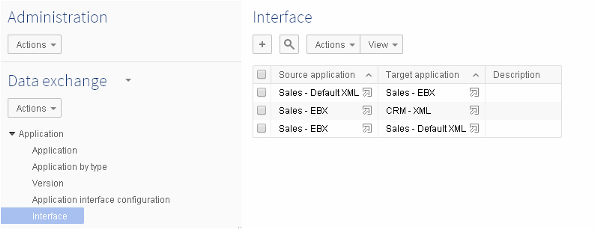
Now, the export UI displays the 'CRM' target application as an option:
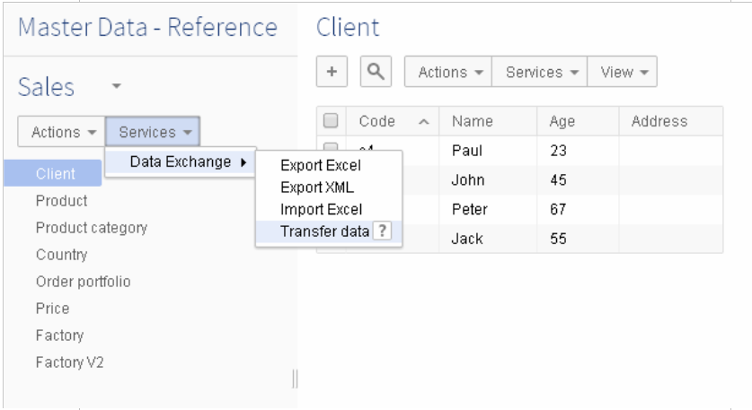
The options are already described in the previous section.
When executing the export process based on this configuration, the add-on raises this error:
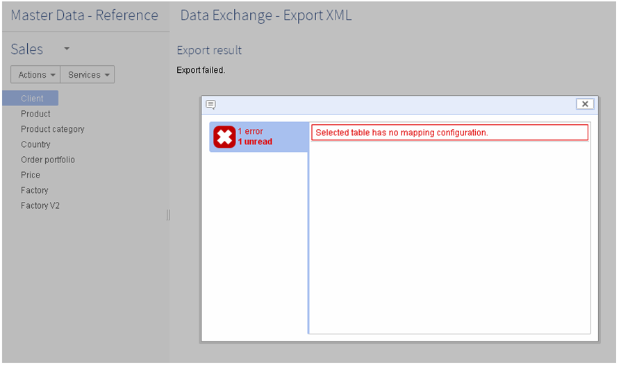
Indeed, even though the XML field configuration is done, the 'Table mapping' and 'Field mapping' are not yet configured. The 'Table mapping' is declared as follows:
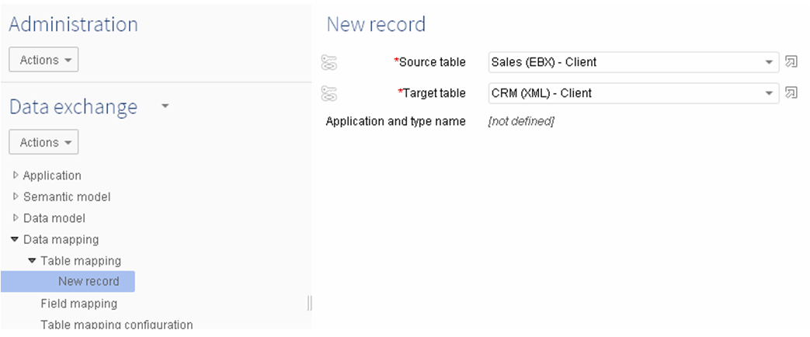
A new execution of the export process entails a useless result because the fields are not exported until the 'Field mapping' is configured:
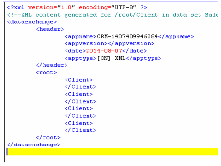
For every field, the mapping from the source to the target is declared as follows:
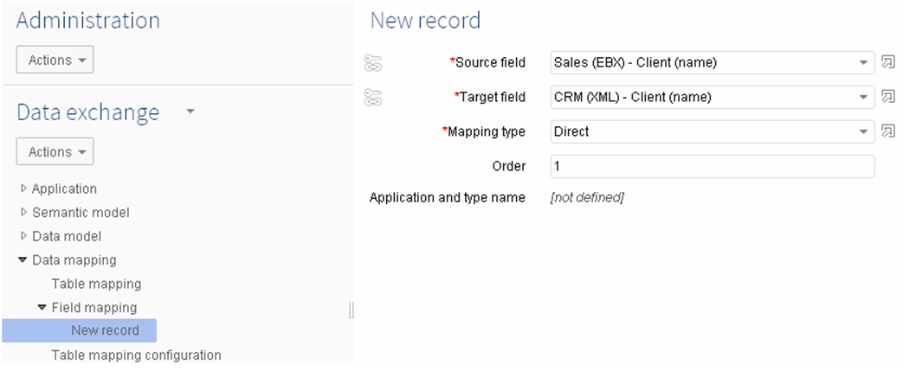
Now, the export process integrates the fields that have been configured (in this example only the name is declared in the 'Field mapping' table).
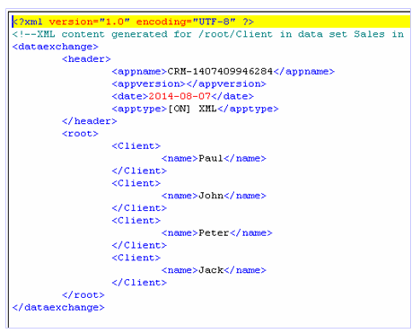
To change the path of a field, a direct modification in the path configuration can be done as illustrated below. The initial path '/Client' has been changed into '/clientName'.
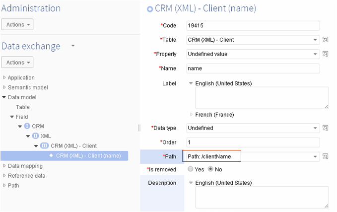
Now, an export process execution generates the following result (new path 'clientName'):
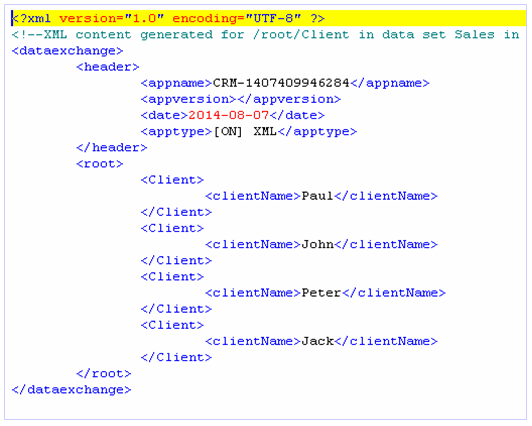
To import an XML file with a data structure that is not compliant with the 'Default XML' configuration, you can manually configure a user-defined data mapping using the same process described in the previous XML export section. You can use the XML import file as a template to automatically generate the XML configuration.
Then you create an 'Interface' from the source XML type application ('CRM') to the target EBX5 type application ('Sales').
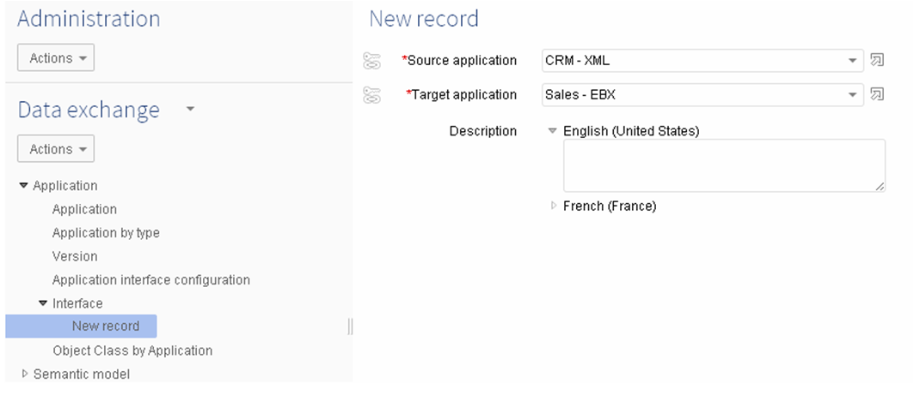
The 'Table mapping' and 'Field mapping' must also be configured:
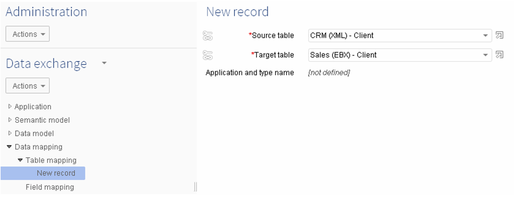
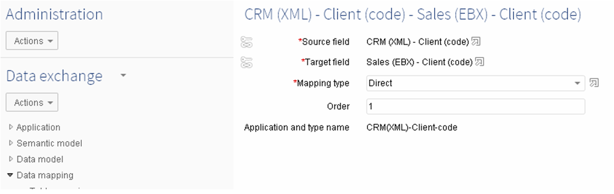
Data transfer is used to copy data from one EBX5 table to another. If the tables share the same data model, the add-on automatically manages the transfer. However, transferring data between tables that don't share the same data model requires a bespoke data mapping configuration.
The data transfer is executed at the data set level. This example uses the 'Sales' data set:
The 'In same data model' option allows you to get all the data spaces and data sets that are based on the same data model as the 'Sales' data set. By selecting this option, data transfer is fully managed by the add-on without requiring any user-defined data mapping configuration.
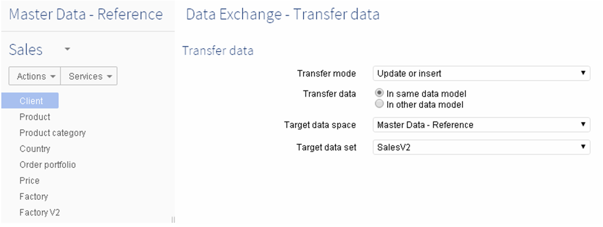
The data transfer can be done for one or several tables in the data set. You can select which tables to transfer as illustrated below:
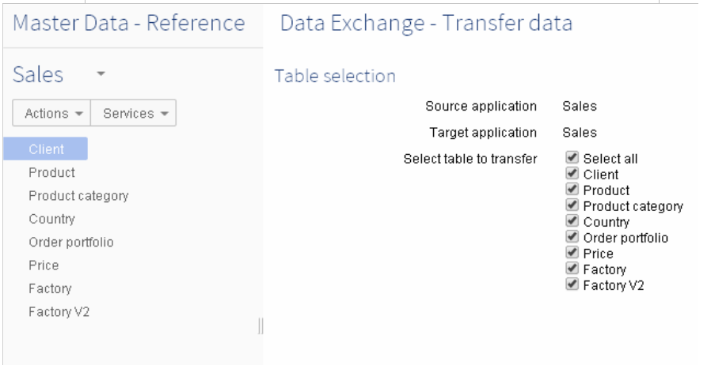
This overview displays the data transfer result:
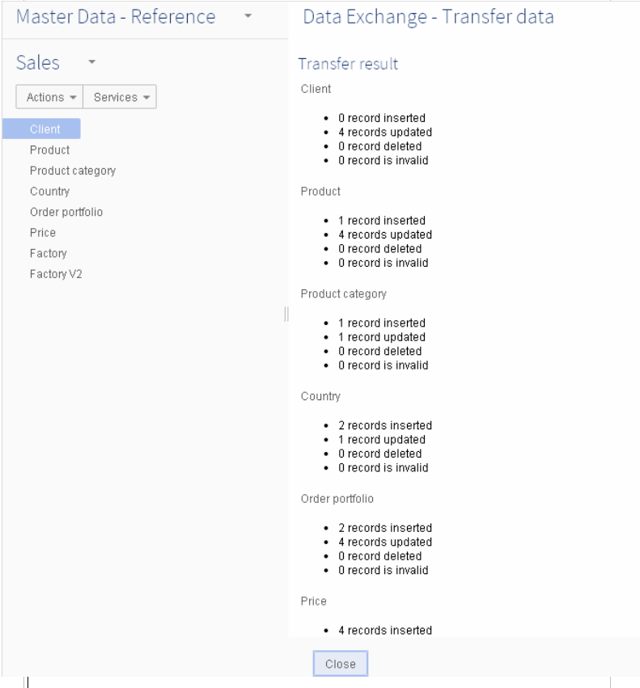
During the transfer process, the add-on does not generate any data mapping configuration in the repository.
When the data transfer is applied between two different data models, a user-defined configuration in Data Exchange must be done, as described below.
First of all, the EBX5 type applications must be declared. The 'Sales' application has already been configured automatically during the previous XML data flow operations. Now, the new 'ERP system' EBX5 type application is declared.
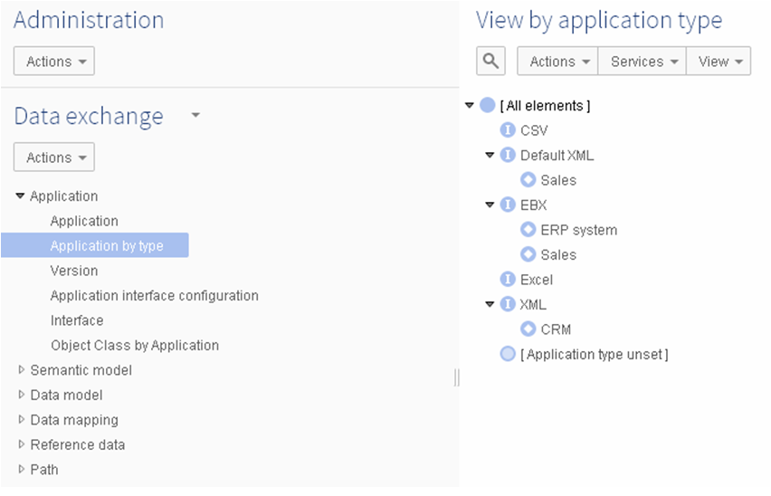
To automatically configure this new application's tables and fields, the 'Generate models' service is used:
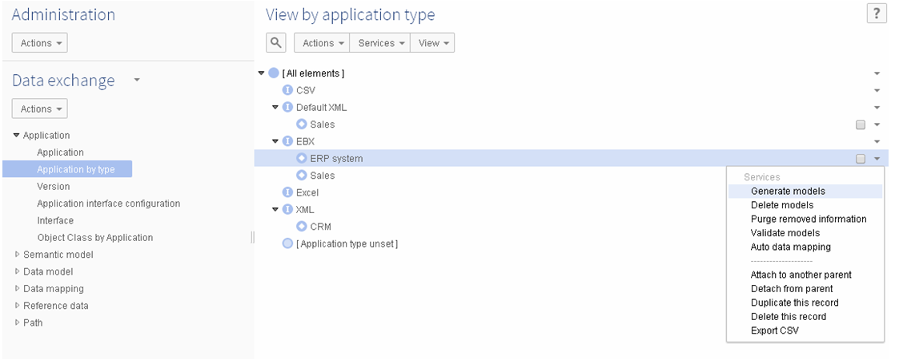
The 'Generate models' service allows you to automatically retrieve the data model (tables and fields) configuration and the semantic model (Object class and Property).
In the current version of the add-on, the semantic data model makes the auto-data mapping between two different EBX5 data models possible.
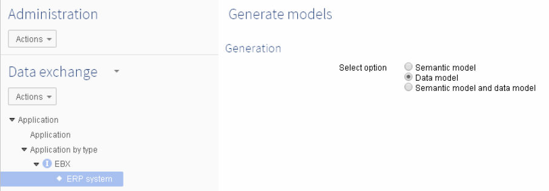
An overview of the service result displays, as illustrated below:
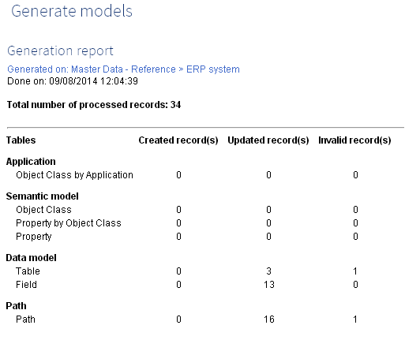
Then, the tables are declared automatically for the 'ERP system' EBX5 type application:
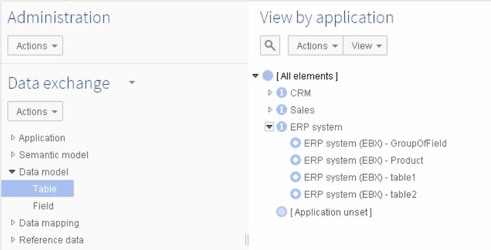
It is now possible to configure the data transfer between the 'Sales' source application and the 'ERP system' target application. To declare this transfer process, an 'Interface' is created as illustrated below:
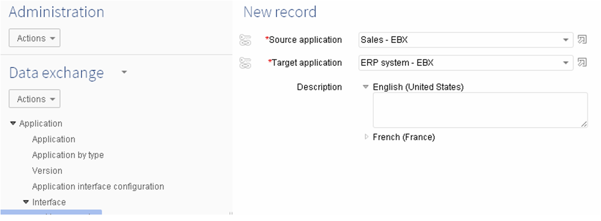
The table mapping and field mapping use the same procedure already described for the XML data flow for configuration.
Based on this configuration, data transfer can be performed between the two applications relying on different data models as illustrated below.
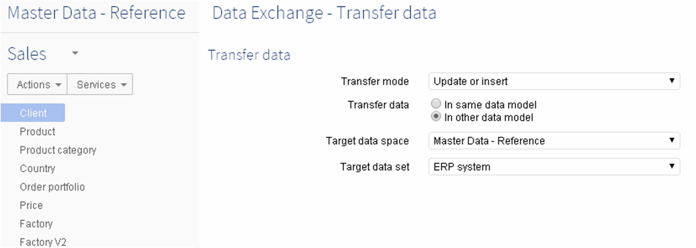
The Excel and CSV export and import processes are based on the previous version of Data Exchange, called 'Add-on for Microsoft® Excel'. You can refer directly to the online help for this part of the add-on.
In the current version of Data Exchange Add-on, the user-defined configuration is not used for the Excel and CSV data flows.